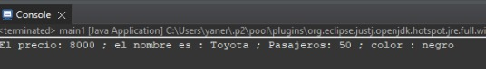

Introducción a Getters y Setters en la UNC:
En el desarrollo de software, los getters y setters son elementos esenciales en la manipulación y gestión de datos, con aplicaciones específicas que adquieren relevancia en la enseñanza en la la escuela de ING. SISTEMAS en la Universidad Nacional de Cajamarca (UNC).
Los getters y setters son métodos utilizados para acceder y modificar los atributos de un objeto, respectivamente. En el contexto de la UNC, donde la eficiencia en la gestión de información es crucial, la implementación adecuada de getters y setters permite un control más preciso sobre los datos académicos, facilitando el acceso y la modificación de información de manera segura.
En el entorno universitario, la utilización de getters y setters se orienta hacia la creación de sistemas informáticos que gestionen de manera efectiva datos académicos, como calificaciones, horarios y registros estudiantiles. Estos métodos proporcionan una capa de abstracción que mejora la modularidad del código, permitiendo una adaptación más ágil a los cambios en los procesos académicos y administrativos de la UNC.
En resumen, en la UNC, la implementación cuidadosa de getters y setters no solo asegura la integridad y seguridad de los datos, sino que también contribuye a la eficiencia y adaptabilidad de los sistemas informáticos que respaldan las actividades académicas y administrativas en la universidad.
Ejercicio 1:
Primera clase:
package ciclo2;
public class automovil1 {
int precio = 0;
String nombre = " ";
int numerodepasajeros = 0;
String color = " ";
public automovil1(int precio, String nombre) {
super();
this.precio = precio;
this.nombre = nombre;
System.out.println("El precio: "+precio+ "; el nombre es : "+nombre);
}
public automovil1(int precio, String nombre, int numerodepasajeros) {
super();
this.precio = precio;
this.nombre = nombre;
this.numerodepasajeros = numerodepasajeros;
System.out.println("El precio: "+precio+ "; el nombre es : "+nombre+"; Pasajeros: "+numerodepasajeros);
}
public automovil1(int precio, String nombre, int numerodepasajeros, String color) {
super();
this.precio = precio;
this.nombre = nombre;
this.numerodepasajeros = numerodepasajeros;
this.color = color;
System.out.println("El precio: "+precio+ " ; el nombre es : "+nombre+" ; Pasajeros: "+numerodepasajeros+" ; color : "+color);
}
}
Clase Main:
package ciclo2;
public class main1 {
public static void main(String[] args) {
// TODO Auto-generated method stub
automovil1 d1 = new automovil1 (8000,"Toyota",50,"negro");
}
}
Resultado:
Diagrama de flujo:

Ejercicio 2:
Resultado:
Ejercicio 3: